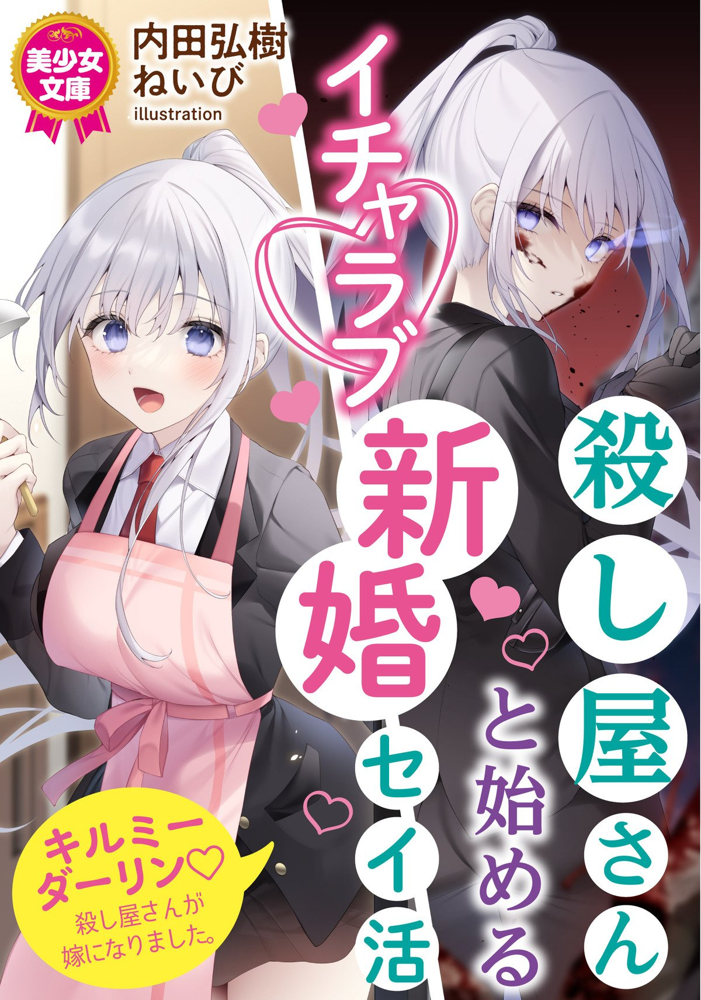

Koroshiya-san to Hajimeru Icha Love Shinkon Seikatsu
Novel Info's
Status: Completed
Genre: Adult, Ecchi, Romance, Slice of Life
Author: Uchida Hiroki
Illustrator: Neibi
Volumes: 1
Original Publisher: N/A
English Publisher: N/A
Fan Translation: N/A
Description/Sypnosis
“It’s fine….. It doesn’t hurt anymore……”
‘I took the virginity of Ms Sophia, a professional assassin.
Separation scars.
She silver haired, cool assassin, my classmate turned into a normal girl.
Friend, no, she turned into my own wife. ……
(Of course, if we have s*x like this, and try to be comfortable while taking care of each other, it will deepen our trust and help us understand each other. ……)
“Move, Naoto,…… and let’s finish like this.”
“I want you ……”
Her usual expressionless behavior completely disappeared due to Naoto presence.
Her face became sunk in pleasure as it was swept away by Naoto’s movements. The gap between the two is unbearable.
Sophia, an assassin, begins a new life after her life saved by him.
After H’s love affair, the two became lovers …… and a married couple.
And become a real family!
Download Links
Epub & Pdf